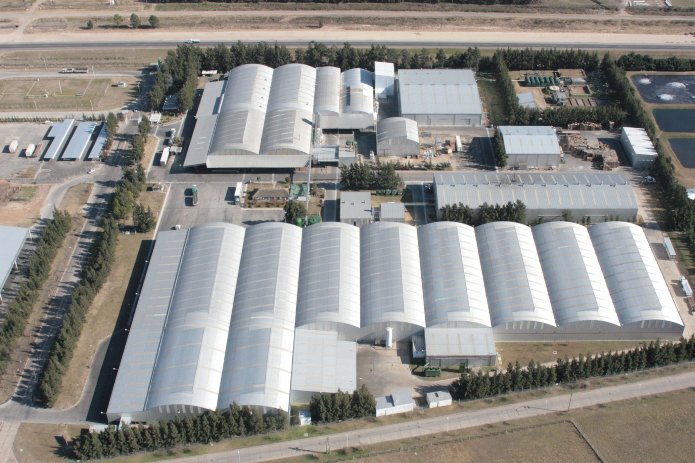

Nuestra historia:
Nacimos hace 60 años en Gualeguaychú, Entre Ríos, fruto de la visión y el entusiasmo de nuestros fundadores, Doña María Celia Munilla y Don Rufino Pablo Baggio (Padre). Crecimos gracias a las familias que eligen nuestras marcas todos los días, y gracias al esfuerzo y la pasión de nuestros más de 1500 empleados e infinidad de colaboradores y proveedores por hacer las cosas bien hechas. Del norte a Ushuaia, de la mesopotamia a la cordillera, trabajamos la tierra en huertas, fincas, viñedos y olivares, de donde parte la materia prima hacia nuestras cinco plantas industriales. De la gran cuenca lechera recibimos, todos los días, leche fresca para convertirla en productos de alta calidad. Nuestros productos llegan a la mesa de millones de argentinos y a más de 72 países del mundo. Reinvertimos en lo que más sabemos hacer: trabajar y dar trabajo. Estamos orgullosos de nuestro pasado, comprometidos con el presente y entusiasmados por el futuro.
